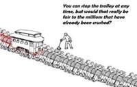

0



"From 2008 to 2024, the number of four-year computer science degrees granted rose about fivefold..." reports the Washington Post. Then in 2025 CS suddenly dropped from the fourth-largest undergraduate major to sixth, they report (citing data from the nonprofit National Student Clearinghouse, which compiles numbers from 97% of U.S. universities.
The 54,000-student drop was "the biggest one-year drop of any major discipline going back to at least 2020." But what major are they choosing instead?
Sarah Karamarkovich, a research associate with the National Student Clearinghouse, pointed to an explanation from the data that we had overlooked. Enrollments in two interdisciplinary majors, data analytics and data science, topped a combined 35,000 in the fall of 2025. That was up from a few hundred when those disciplines were broken out into their own majors in 2020. Those relatively new categories reflect colleges' zeal to create specialized majors, including in AI, data science, robotics and cybersecurity. Some of those disciplines may be counted in the national enrollment data as computer science. Others are not.
The numbers suggest that some of the disappearing computer science majors didn't flee so much as they splintered into related disciplines.... The 8 percent decline in computer science majors last fall was nearly mirrored by a 7.3 percent increase in engineering majors, according to the National Student Clearinghouse data. Within engineering, mechanical and electrical engineering major enrollments increased by the largest absolute amounts — a jump of 11 percent and 14 percent, respectively.
Read more of this story at Slashdot.
Yesterday the U.S. Congress approved "a short-term extension" of a FISA law that allows wiretaps without a warrant for surveilling foreign targets, reports CNN — but only until April 30. Republican congressional leaders had sought an 18-month extension, but "failed to secure" the votes after "clamoring from some of their members for reforms to protect Americans' privacy."
The warrantless surveillance law, known as Section 702 of the Foreign Intelligence Surveillance Act, was set to expire on Monday night. Members are hoping the additional time will allow them to come to agreement without ending authorization for the intelligence gathering program, which permits US officials to monitor phone calls and text messages from foreign targets... There was an hour of suspense in the Senate Friday morning when it appeared possible that Democratic Sen. Ron Wyden, a longtime critic of FISA 702, might block the House-passed extension. But ultimately, he said his House colleagues had assured him "this short-term extension makes reform more likely, and expiration makes reform less likely," and so he chose not to object....
House Republican leaders believed Thursday night they had struck a deal with conservative holdouts who harbor deep and longstanding concerns that a key piece of the law infringes on Americans' privacy rights. But in a pair of after-midnight votes, more than a dozen rank-and-file Republicans rejected the long-term reauthorization plan on the floor, which was the result of days of tense negotiations among leadership, lawmakers and the White House.
The law allows authorized US officials to gather phone calls and text messages of foreign targets, but they can also incidentally collect the data of Americans in the process. Senior national security officials have for years said the law is critical for thwarting terror attacks, stemming the flow of fentanyl into the US and stopping ransomware attacks on critical infrastructure. Civil liberties groups on the left and the right, meanwhile, argue the surveillance authority risks infringing on Americans' privacy.
Read more of this story at Slashdot.
Slashdot reader smazsyr writes: A new review says we've had fructose wrong for decades. The nine authors, led by Richard Johnson at the University of Colorado Anschutz, argue that fructose "is not just another calorie." It is a signal. It tells the liver to make fat and brace for a famine that never comes. That made sense for a bear fattening up on autumn berries. It makes less sense for a person drinking soda in March.
The review reframes the WHO's sugar guideline, argues ScienceBlog.com, as "less a recommendation about calories and more a warning about a signalling molecule we have been dosing ourselves with, several times a day, for most of a century."
Read more of this story at Slashdot.
20-year-old Matthew Lane sent a text message to ABC News as his parents drove him to federal prison in Connecticut. "I'm just scared," he said, calling the whole situation "extremely sad."
Barely a year earlier, while still a teenager, he helped launch what's been described as the biggest cyberattack in U.S. education history — a data breach that concerned authorities so much, it prompted briefings with senior government officials inside the White House Situation Room. The breach pierced the education technology company PowerSchool — used by 80% of school districts in North America... [and operating in about 90 countries around the world]. With threats to expose social security numbers, dates of birth, family information, grades, and even confidential medical information, the breach cornered PowerSchool into paying millions of dollars in ransom.
"I think I need to go to prison for what I did," Lane told ABC News in an exclusive interview, speaking publicly for the first time about the headline-grabbing heist and his life as a cybercriminal. "It was disgusting, it was greedy, it was rooted in my own insecurities, it was wrong in every aspect," he said in the interview, two days before reporting to prison... At about 6:30 on a Tuesday morning last April, FBI agents started banging on the door of Lane's second-floor dorm room. "FBI! We have a search warrant," Lane recalled them shouting. They seized his devices and many of the luxury items he bought with "dirty" money, as he put it. He said he felt a "wave of relief.... I'm honestly thankful for the FBI," he said. "After they left, I was like, 'It's over ... I'm done with this'..."
A federal judge in Massachusetts sentenced him to four years in federal prison and ordered him to pay more than $14 million in restitution.
"In the wake of the breach, PowerSchool offered two years' worth of credit-monitoring and identity protection services to concerned customer," the article points out. But it also notes two other arrests in September of teenaged cybercriminals:
- A 15-year-old boy in Illinois who allegedly attacked Las Vegas casinos, reportedly costing MGM Resorts alone more than $100 million
- A British national who when he was 16 helped breach over 110 companies around the world and extort $115 million.
But ironically, Lane tells ABC News it all started on Roblox, where he'd met cheaters, password-stealers, and cybercriminals sharing photos of their stacks of money, creating a "sense of camaraderie"
Lane and others warn that online forums also attract criminal groups seeking to recruit potential hackers. "The bad guys are on all the platforms watching the kids playing," Hay said. "And when they see an elite-level performer, they go approach that kid, masquerading as another kid, and they go, 'Hey, you want to earn some [money]? ... Here are the tools, here are the techniques'...."
According to Lane, he spent his "ill-gotten gains" on designer clothes, diamond jewelry, DoorDash deliveries, Airbnb rentals for him and his friends, and drugs — "lots of drugs." He said he would numb ever-present feelings of guilt with drugs — from high-potency marijuana to acid. But it was hacking that gave him the strongest high. "It's indescribable the adrenaline you get when you do something like that," he said. "It's way more than driving 120 miles per hour. ... Incomparable to any drug at all, as well."
"On Monday, Roblox announced that, starting in June, it will offer age-checked accounts for younger users that limit what games they can play, and add 'more closely align content access, communication settings, and parental controls with a user's age.'"
Read more of this story at Slashdot.
An anonymous reader quotes a report from the Guardian: The critical Atlantic current system appears significantly more likely to collapse than previously thought after new research found that climate models predicting the biggest slowdown are the most realistic. Scientists called the new finding "very concerning" as a collapse would have catastrophic consequences for Europe, Africa and the Americas. The Atlantic meridional overturning circulation (Amoc) is a major part of the global climate system and was already known to be at its weakest for 1,600 years as a result of the climate crisis. Scientists spotted warning signs of a tipping point in 2021 and know that the Amoc has collapsed in the Earth's past.
Climate scientists use dozens of different computer models to assess the future climate. However, for the complex Amoc system, these produce widely varying results, ranging from some that indicate no further slowdown by 2100 to those suggesting a huge deceleration of about 65%, even when carbon emissions from fossil fuel burning are gradually cut to net zero. The research combined real-world ocean observations with the models to determine the most reliable, and this hugely reduced the spread of uncertainty. They found an estimated slowdown of 42% to 58% in 2100, a level almost certain to end in collapse.
The Amoc is a major part of the global climate system and brings sun-warmed tropical water to Europe and the Arctic, where it cools and sinks to form a deep return current. A collapse would shift the tropical rainfall belt on which many millions of people rely to grow their food, plunge western Europe into extreme cold winters and summer droughts, and add 50-100cm to already rising sea levels around the Atlantic. The slowdown has to do with the Arctic's rapidly rising temperatures from global warming. "Warmer water is less dense and therefore sinks into the depths more slowly," explains the Guardian. "This slowing allows more rainfall to accumulate in the salty surface waters, also making it less dense, and further slowing the sinking and forming an Amoc feedback loop."
The new research has been published in the journal Science Advances.
Read more of this story at Slashdot.
A new Ipsos poll finds Americans are increasingly getting news from online personalities and comedians instead of traditional TV or newspapers. The survey says nearly 70% get news online in a given week, versus 55% from TV and 25% from newspapers, with figures like Joe Rogan, Greg Gutfeld, Sean Hannity, and late-night hosts ranking prominently depending on political leanings. From the Hollywood Reporter: The poll, which was conducted in March, actually found the conservative politicians and cabinet members, including President Trump, were the top news influencers. When politicos were excluded, Joe Rogan led the list, followed by Fox News personalities Greg Gutfeld and Sean Hannity, and then TuckerCarlson and Ben Shapiro. The only three influencers to crack 10 percent were Trump, Rogan, and JD Vance. Among people who voted for Kamala Harris, the top news personalities were late night hosts, led by ABC's Jimmy Kimmel, followed by CBS Late Show host Stephen Colbert, and Daily Show host Jon Stewart.
Just under 70 percent of respondents said they get their news online in a given week, compared to 55 percent for TV, and 25 percent for newspapers. [...] Of traditional media outlets, TV dominated, with Fox News, the broadcast networks, and CNN topping the list of sources. Facebook, YouTube and Instagram were the most popular online news sources. "On these platforms opinionated personalities and comedians appear to drown out anyone who would fit in the traditional journalist category," said assistant professor of practice and Jordan Center Executive Director Steven L Herman. "Even in the late 19th century and early 20th centuries, sensationalist and polarizing voices in print and later on air were among the most influential in the political landscape -- such as political satirist Mark Twain and populist Father Charles Coughlin."
Read more of this story at Slashdot.
NIST is narrowing how it handles CVEs in the National Vulnerability Database (NVD), saying it will only automatically enrich higher-priority vulnerabilities. "CVEs that do not meet those criteria will still be listed in the NVD but will not automatically be enriched by NIST," it said. "This change is driven by a surge in CVE submissions, which increased 263% between 2020 and 2025. We don't expect this trend to let up anytime soon." The Hacker News reports: The prioritization criteria outlined by NIST, which went into effect on April 15, 2026, are as follows:
- CVEs appearing in the U.S. Cybersecurity and Infrastructure Security Agency's (CISA) Known Exploited Vulnerabilities (KEV) catalog.
- CVEs for software used within the federal government.
- CVEs for critical software as defined by Executive Order 14028: this includes software that's designed to run with elevated privilege or managed privileges, has privileged access to networking or computing resources, controls access to data or operational technology, and operates outside of normal trust boundaries with elevated access.
Any CVE submission that doesn't meet these thresholds will be marked as "Not Scheduled." The idea, NIST said, is to focus on CVEs that have the maximum potential for widespread impact. "While CVEs that do not meet these criteria may have a significant impact on affected systems, they generally do not present the same level of systemic risk as those in the prioritized categories," it added. [...]
Changes have also been instituted for various other aspects of the NVD operations. These include:
- NIST will no longer routinely provide a separate severity score for a CVE where the CVE Numbering Authority has already provided a severity score.
- A modified CVE will be reanalyzed only if it "materially impacts" the enrichment data. Users can request specific CVEs to be reanalyzed by sending an email to the same address listed above.
- All unenriched CVEs currently in backlog with an NVD publish date earlier than March 1, 2026, will be moved into the "Not Scheduled" category. This does not apply to CVEs that are already in the KEV catalog.
- NIST has updated the CVE status labels and descriptions, as well as the NVD Dashboard, to accurately reflect the status of all CVEs and other statistics in real time.
Read more of this story at Slashdot.
Wednesday BleepingComputer reported that more than 30 WordPress plugins "have been compromised with malicious code that allows unauthorized access to websites running them."
A malicious actor planted the backdoor code last year but only recently started pushing it to users via updates, generating spam pages and causing redirects, as per the instructions received from the command-and-control (C2) server. The compromise affects plugins with hundreds of thousands of active installations and was spotted by Austin Ginder, the founder of managed WordPress hosting provider Anchor Hosting, after receiving a tip about one add-on containing code that allowed third-party access.
Further investigation by Ginder revealed that a backdoor had been present in all plugins within the EssentialPlugin package since August 2025, after the project was acquired in a six-figure deal by a new owner.... "The injected code was sophisticated. It fetched spam links, redirects, and fake pages from a command-and-control server. It only showed the spam to Googlebot, making it invisible to site owners," explained Ginder.
"WordPress.org's v2.6.9.1 update neutralized the phone-home mechanism in the plugin," Ginder writes in a blog post. "But it did not touch wp-config.php. The SEO spam injection was still actively serving hidden content to Googlebot.
"And here is the wildest part. It resolved its C2 domain through an Ethereum smart contract, querying public blockchain RPC endpoints. Traditional domain takedowns would not work because the attacker could update the smart contract to point to a new domain at any time."
This has happened before. In 2017, a buyer using the alias "Daley Tias" purchased the Display Widgets plugin (200,000 installs) for $15,000 and injected payday loan spam. That buyer went on to compromise at least 9 plugins the same way.... The WordPress plugin marketplace has a trust problem... The Flippa listing for Essential Plugin was public. The buyer's background in SEO and gambling marketing was public. And yet the acquisition sailed through without any review from WordPress.org.
WordPress.org has no mechanism to flag or review plugin ownership transfers. There is no "change of control" notification to users. No additional code review triggered by a new committer. The Plugins Team responded quickly once the attack was discovered. But 8 months passed between the backdoor being planted and being caught.
Thanks to Slashdot reader axettone for sharing the news.
Read more of this story at Slashdot.
Friday Anthropic's CEO met with top U.S. officials and "discussed opportunities for collaboration," according to a White House spokesperson itedd by Politico, "as well as shared approaches and protocols to address the challenges associated with scaling this technology."
CNN notes the meeting happens at the same time Anthropic "battles the Trump administration in court for blacklisting its Claude AI model..."
The meeting took place as the US government is trying to balance its hardline approach to Anthropic with the national security implications of turning its back on the company's breakthrough technology — including its Mythos tool that can identify cybersecurity threats but also present a roadmap for hackers to attack companies or the government... The Office of Management and Budget has already told agencies it is preparing to give them access to Mythos to prepare, Bloomberg reported. Axios reported the White House is also in discussion to gain access to Mythos.
The Trump administration "recognizes the power" of Mythos, reports Axios, "and its highly sophisticated — and potentially dangerous — ability to breach cybersecurity defenses."
"It would be grossly irresponsible for the U.S. government to deprive itself of the technological leaps that the new model presents," a source close to negotiations told us. "It would be a gift to China"... Some parts of the U.S. intelligence community, plus the Cybersecurity and Infrastructure Security Agency (CISA, part of Homeland Security), are testing Mythos. Treasury and others want it.
The White House added they plan to invite other AI companies for similar discussions, Politico reports. But Mythos "is also alarming regulators in Europe, who have told POLITICO they have not been able to gain access..."
U.S. government agency tech leaders sought access to the model after Anthropic earlier this year began testing the model and granted limited access to a select group of companies, including JPMorgan, Amazon and Apple... after finding it had hacking capabilities far outstripping those of previous AI models. This includes the ability to autonomously identify and exploit complex software vulnerabilities, such as so-called zero-day flaws, which even some of the sharpest human minds are unable to patch. The AI startup also wrote that the model could carry out end-to-end cyberattacks autonomously, including by navigating enterprise IT systems and chaining together exploits. It could also act as a force-multiplier for research needed to build chemical and biological weapons, and in certain instances, made efforts to cover its tracks when attacking systems, according to Anthropic's report on the model's capabilities and its safety assessments.
Those findings and others have inspired fears that the model could be co-opted to launch powerful cyberattacks with relative ease if it fell into the wrong hands. Logan Graham, a senior security researcher at Anthropic, previously told POLITICO that researchers and tech firms had been given early access to Mythos so they could find flaws in their critical code before state-backed hackers or cybercriminals could exploit them. "Within six, 12 or 24 months, these kinds of capabilities could be just broadly available to everybody in the world," Graham said.
Read more of this story at Slashdot.
Some failed startups are reportedly selling old Slack messages, emails, and other internal records to AI companies as training data, creating a new way to cash out after shutting down. Fast Company reports: Shanna Johnson, the CEO of now-defunct software company Cielo24, told the publication that she was able to sell every Slack message, internal email, and Jira ticket as training data for "hundreds of thousands of dollars."
This isn't a one-off scenario. SimpleClosure, a startup that helps companies like Cielo24 shut down, told Forbes that there's been major interest from AI companies trying to get their hands on workplace data. Because of this, SimpleClosure launched a new tool that allows companies to sell their wealth of internal communications -- from Slack archives to email chains -- to AI labs. The company said it's processed 100 such deals in the past year. Payouts ranged from $10,000 to $100,000. "I think the privacy issues here are quite substantial," Marc Rotenberg, founder of the Center for AI and Digital Policy, told Forbes. "Employee privacy remains a key concern, particularly because people have become so dependent on these new internal messaging tools like Slack. ... It's not generic data. It's identifiable people."
Read more of this story at Slashdot.
NASA has revived support for the European Space Agency's long-delayed Rosalind Franklin Mars rover mission. According to the space agency, the current plan is to launch via a SpaceX Falcon Heavy no earlier than 2028. Engadget reports: This is a partnership between NASA and the ESA, with the European agency providing the rover, the spacecraft and the lander. The US will provide braking engines for the lander, heater units for the rover's internal systems and, of course, assistance with the actual launch.
The rover will be outfitted with scientific instruments to look for signs of ancient life on the red planet. These include a state-of-the-art mass spectrometer and an organic molecule analyzer, which will come in handy as the vehicle collects samples at the Oxia Planum landing site. The mission has been stuck in development limbo since 2001, with delays caused by budget problems, technical issues, shifting international partners, and geopolitical fallout. After NASA dropped out, Russia stepped in, then was cut loose after invading Ukraine, and now -- despite NASA rejoining in 2024 and fresh political budget threats -- the rover is tentatively back on track for a 2028 launch.
Read more of this story at Slashdot.
An anonymous reader quotes a report from Wired: Sam Altman's iris-scanning, humanity-verifying World project announced at an event in San Francisco on Friday that Tinder users around the globe can now put a digital badge on their profiles signaling to potential suitors that they're a real human, provided they've already stared into one of World's glossy white Orbs and allowed their eyes to be scanned. The announcement follows a pilot project for Tinder verification that World previously conducted in Japan.
[...] In addition to the Tinder global expansion, Tools for Humanity, the company behind World, announced a number of other consumer and enterprise partnerships on Friday at its Lift Off event in San Francisco. The startup says Tinder users who verify with their World ID will receive five free "boosts," typically a paid feature that increases the number of users who see a profile by up to 10 times for 30 minutes. The videoconferencing platform Zoom also says that users can now require other participants to verify their identity with World before joining a call. Docusign, the contract signing software, will allow users to require World's identity verification technology.
Tiago Sada, Tools for Humanity's chief product officer, tells WIRED the company sees major platform partnerships as key to helping World become a mainstream identity-verification technology. Sada said he's especially interested in working with social media companies in the future, and was encouraged to see that Reddit has started testing World as a solution to help users distinguish bots from real people. [...] World is also launching a tool called Concert Kit, which lets artists reserve concert tickets for verified humans, a pitch aimed squarely at the bot-driven scalping problem that critics say has plagued sites like TicketMaster. World will test the feature on the upcoming Bruno Mars World Tour featuring Anderson .Paak, who is scheduled to play a verified-humans-only show under his alias DJ Pee .Wee in San Francisco on Friday night. "The idea that World ID is not just private, but it's one of the most private things you've ever used, that's not obvious," says Sada. "We're just not used to this kind of technology. Many people used to tape their [iPhone's sensor used to enable] Face ID when it came out, then we got used to it."
Read more of this story at Slashdot.
Amazon's newest Fire TV Sticks are dropping support for normal sideloading, blocking apps from outside the Amazon Appstore unless the device is registered with developers. Cord Cutters News reports: This week, Amazon announced the upcoming launch of a new Fire TV Stick HD. The new model will run on Amazon's Vega OS, rather than Android, so most streaming apps will be supported, but users won't be add third party apps. Now, on the product page to preorder the new Fire Stick, some Amazon customers are getting a message warning them that the new model won't allow sideloading. Interestingly, not all customers are getting the message, whether signed in to an Amazon account or not.
The message, shown in a screenshot below, says: "For enhanced security, this device prevents sideloading or installing apps from unknown sources. Only apps from the Amazon Appstore are available for download." [...] The Fire TV Stick Select, announced in September 2025, also runs on Vega and some customers will see the same message about sideloading on that product page. [...] While Amazon continues to be a "multi-OS company," we should expect that future Fire TV models will also be built with Vega OS, limiting the apps users can access with their streaming devices to those from the Amazon Appstore.
Read more of this story at Slashdot.
Nextcloud joined a project to create a sovereign replacement for Microsoft Office called "Euro-Office". But after that project forked OnlyOffice, OnlyOffice suspended its partnership with Nextcloud. "They removed all references to our brand/attribute as required by our license," argued OnlyOffice CEO Lev Bannov on March 30th. ("The core issue here isn't just about what the AGPL license states, but about the additional provisions we, as the authors, have included... If the Euro-Office team believes our approach conflicts with the AGPLv3 license, we invite them to submit an official request to FSF for review.")
But this week the FSF responded (as "the steward of the GNU family of General Public Licenses"), criticizing OnlyOffice's "attempt to impose an additional restriction on the AGPLv3" and calling it "inconsistent with the freedoms granted by the license," in a blog post from FSF licensing/compliance manager Krzysztof Siewicz:
It is possible to modify the (A)GPLv3 with additional terms, but only by adhering to the terms of the license... The (A)GPLv3 makes it clear that it permits all licensees to remove any additional terms that are "further restrictions" under the (A)GPLv3. It states, "[i]f the Program as you received it, or any part of it, contains a notice stating that it is governed by this License along with a term that is a further restriction, you may remove that term"...
We urge OnlyOffice to clarify the situation by making it unambiguous that OnlyOffice is licensed under the AGPLv3, and that users who already received copies of the software are allowed to remove any further restrictions. Additionally, if they intend to continue to use the AGPLv3 for future releases, they should state clearly that the program is licensed under the AGPLv3 and make sure they remove any further restrictions from their program documentation and source code. Confusing users by attaching further restrictions to any of the FSF's family of GNU General Public Licenses is not in line with free software.
"If FSF determines that our license and project align with AGPLv3, we will continue as an open-source initiative," OnlyOffice's CEO had written in March. "However, if the decision goes against us, we are ready to consider other options."
Read more of this story at Slashdot.
BrianFagioli writes: Mozilla's email subsidiary MZLA Technologies just introduced Thunderbolt, an open-source AI client aimed at organizations that want to run AI on their own infrastructure instead of relying entirely on cloud services. The idea is to give companies full control over their data, models, and workflows while still offering things like chat, research tools, automation, and integration with enterprise systems through the Haystack AI framework. Native apps are planned for Windows, macOS, Linux, iOS, and Android. Thunderbolt allows organizations to do the following:
- Run AI with their choice of models, from leading commercial providers to open-source and local models
- Connect to systems and data: Integrate with pipelines and open protocols, including: deepset's Haystack platform, Model Context Protocol (MCP) servers, and agents with the Agent Client Protocol (ACP)
- Automate workflows and recurring tasks: Generate daily briefings, monitor topics, compile reports, or trigger actions based on events and schedules
- Work seamlessly across devices with native applications for Windows, macOS, Linux, iOS, and Android
- Maintain security with self-hosted deployment, optional end-to-end encryption, and device-level access controls
Read more of this story at Slashdot.
Chris Stokel-Walker / Bloomberg : Anthropic's Mythos adds to concerns about rising workloads for open-source maintainers, as many have already been dealing with a “crazy” number of bug reports — Anthropic's Mythos and similar AI tools can identify threats and vulnerabilities faster than small teams can fix them, putting the internet at risk.
Stephanie Stacey / Financial Times : Airbnb launches a pilot in NYC, LA, and other cities that lets users to select from a range of boutique hotels alongside private homes in a bid to boost growth — Company expands accommodation options alongside home rentals but analysts warn of stiff competition
Michael Nuñez / VentureBeat : Salesforce announces Headless 360, an initiative that will give AI agents access to Salesforce's platform capabilities through APIs, MCP tools or CLI commands — Salesforce on Wednesday unveiled the most ambitious architectural transformation in its 27-year history, introducing “Headless 360” …
Brent Crane / Bloomberg : A profile of OpenTable CEO Debby Soo, who shifted its focus from diners to restaurants; it now seats ~2B diners a year across 65K restaurants, an all-time high — The pioneering reservation app was losing marquee restaurant groups before its chief executive made some big changes.
Nikkei Asia : Global DRAM supply is likely to meet only 60% of demand through 2027; memory to hit ~40% of low-end smartphone manufacturing costs by mid-2026, up from 20% now — TOKYO/SEOUL — A shortage of memory chips appears likely to continue until around 2027, with the top U.S. and South Korean …
Mary Ann Azevedo / Crunchbase News : Autonomous vehicle startups raised a record $21.4B across 34 deals through April 15, up from $5.9B raised across 99 investments globally in all of 2025 — Funding to autonomous vehicle startups has seen a massive resurgence in 2026, more than tripling so far this year compared to all of 2025 globally, Crunchbase data shows.
Reuters : Chinese lidar maker Hesai, a primary supplier for Nvidia's ADAS, announces EXT lidar, calling it the industry's first to integrate spatial and color detection — Hesai (2525.HK), China's leading maker of lidar, has developed a version of the technology used in autonomous driving that is capable …
Nicole Nguyen / Wall Street Journal : Some Mac Mini and Mac Studio models are unavailable or facing up to 12-week wait times in the US, with analysts citing strong demand from AI agent power users — The scarcity of Apple's littlest Mac comes at a time of high interest from AI power users and a potential product refresh
Leo Marchandon / Reuters : The EC awards a six-year, €180M sovereign cloud contract to four European providers as part of a push to reduce the EU's dependence on non-European tech — The European Commission on Friday awarded a 180 million euro ($212 million) tender for sovereign cloud services to four European providers …
Financial Times : Sources suggest Anthropic is holding off from a wider Mythos release until it can reliably serve it to customers; Anthropic has suffered outages in recent weeks — Dario Amodei met with Susie Wiles despite lawsuits over whether AI lab is a national security threat
Siladitya Ray / Forbes : What some leaders think of using universal income to mitigate AI-fueled layoffs: Musk calls it the “best way”, OpenAI's policy doc mentions a Public Wealth Fund — Topline — Elon Musk on Friday touted what he described as “Universal HIGH INCOME” as a solution to deal …
Financial Times : Sources: Recursive Superintelligence, a four-month-old start-up developing self-teaching AI and founded by ex-DeepMind and OpenAI engineers, has raised $500M+ — Group founded by former engineers at DeepMind and OpenAI secures $4bn valuation in deal with Google's venture arm and Nvidia
Axios : White House says a meeting between Chief of Staff Susie Wiles and Dario Amodei had been “productive and constructive”; source: Scott Bessent joined the meeting — Treasury Secretary Scott Bessent joined a meeting on Friday between White House Chief of Staff Susie Wiles …
Zvi Mowshowitz / Don't Worry About the Vase : A deep dive into Dwarkesh Patel's interview with Jensen Huang, including Huang's takes on Nvidia's moat and chip sales to China, and reactions to the interview — Some podcasts are self-recommending on the 'yep, I'm going to be breaking this one down' level. This was one of those. So here we go.
Rebecca Bellan / TechCrunch : Bill Peebles, the researcher behind Sora, is leaving OpenAI, along with Srinivas Narayanan, OpenAI's CTO of enterprise applications — OpenAI is losing two of the architects of its most ambitious moonshots. Kevin Weil, who led the company's science research initiative, and Bill Peebles …